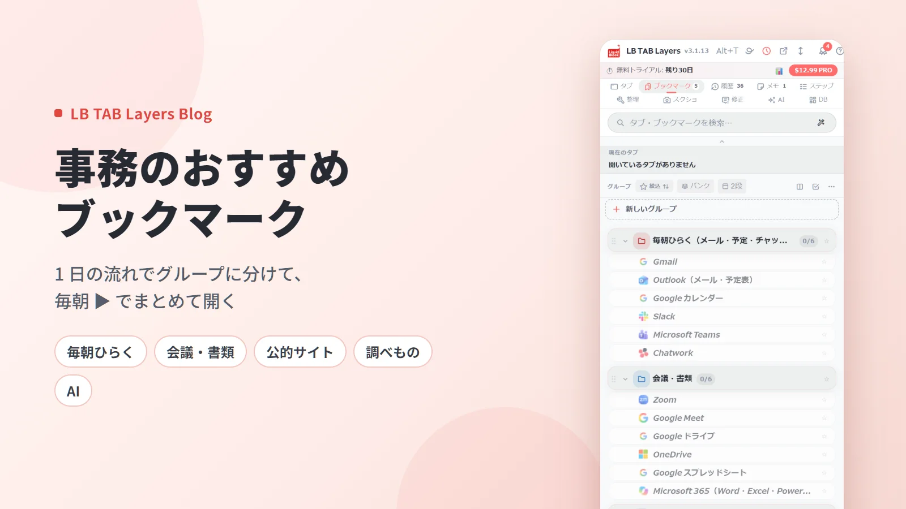
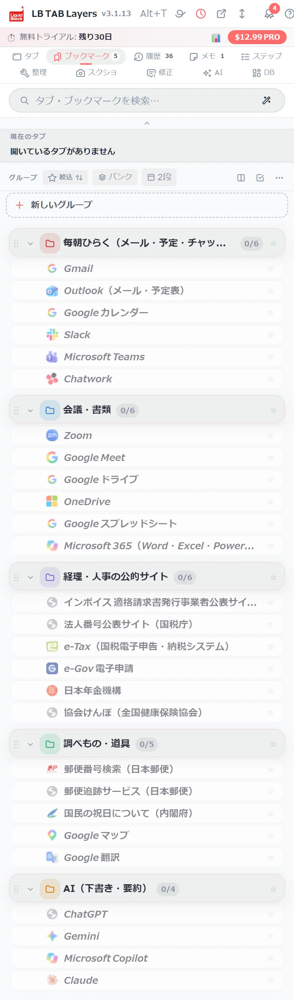
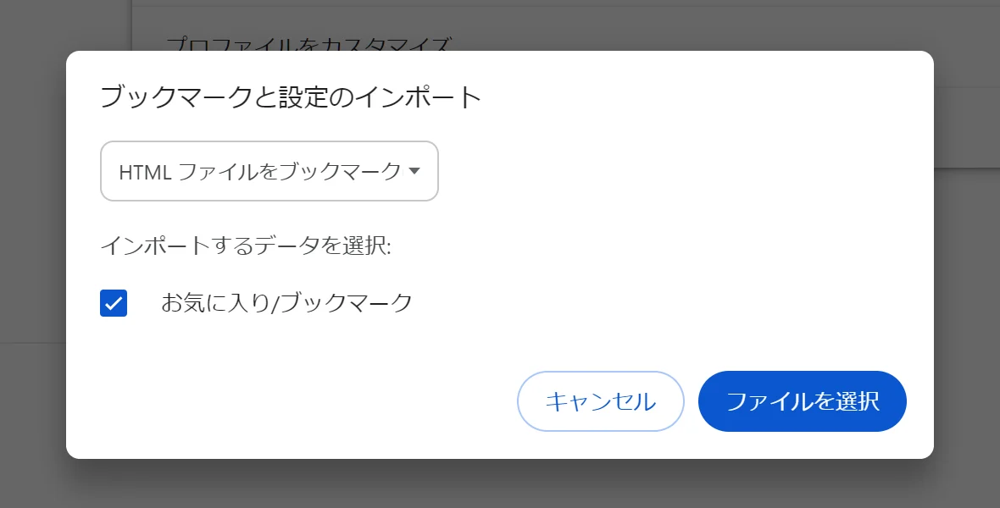

事務の仕事でブックマークしておくと便利なのは、毎日開くメール・予定表・チャット、会議と書類の置き場、請求書の確認や月末・届出で使う公的なサイト（国税庁のインボイス公表サイトと法人番号公表サイト、e-Tax、e-Gov 電子申請、日本年金機構など）、郵便番号や祝日を調べるページ、そして AI です。この記事では 27 個を、1 日の流れに沿った 5 つのグループに分けて紹介します。リストはブックマークのファイル（HTML）で配っていて、LB TAB Layers に取り込むと、そのまま 5 つのグループとして並び、毎朝 ▶ でまとめて開けます。Chrome のふつうのブックマークとして読み込むこともできます。
事務・総務・経理・人事の仕事で開くサイトは、毎日開くものと、月末や手続きのときだけ開くものに分かれます。毎日のものは、すぐ開けるところに。たまに開くものは、いざというときに探さなくて済むところに。この記事では、ブックマークしておくと便利なサイトとツールを、1 日の流れに沿った 5 つのグループにまとめました。
サービスの説明とアドレスは、2026 年 11 月 23 日に、それぞれの公式のページで確かめた内容です。同じ用途のサービスが並んでいるところは、会社で使っているほうを残してください。値段やプランの比べ方は、この記事では扱いません。
事務の仕事でブックマークしておくと便利なサイト・ツール（5 グループ・27 個）
グループは、1 日の流れの順に並べています。後半で紹介する LB TAB Layers の無料版のグループの数（5 つ）に収めるため、5 つのグループにしました。
| グループ | 開くとき | 入っているもの |
|---|---|---|
| 1. 毎朝ひらく（メール・予定・チャット） | 始業のとき | Gmail・Outlook・Google カレンダー・Slack・Microsoft Teams・Chatwork |
| 2. 会議・書類 | 会議に入る・書類を作る | Zoom・Google Meet・Google ドライブ・OneDrive・Google スプレッドシート・Microsoft 365 |
| 3. 経理・人事の公的サイト | 請求書の確認・月末・届出 | インボイス公表サイト・法人番号公表サイト・e-Tax・e-Gov 電子申請・日本年金機構・協会けんぽ |
| 4. 調べもの・道具 | 宛名・発送・日程・案内 | 郵便番号検索・郵便追跡サービス・国民の祝日・Google マップ・Google 翻訳 |
| 5. AI（下書き・要約） | 文面の下書き・まとめ | ChatGPT・Gemini・Microsoft Copilot・Claude |
📥 このリストは、ファイルで配っています。事務のおすすめブックマークのファイル（HTML）をダウンロード。中身は、この記事で紹介する 27 個のリンクです。LB TAB Layers に取り込むと 5 つのグループとして並び、Chrome のふつうのブックマークとしても読み込めます（手順は後半）。
1. 毎朝ひらく（メール・予定・チャット）
始業のときに、まず開くものです。メールは Gmail か Outlook、チャットは Slack・Microsoft Teams・Chatwork のうち、会社で使っているものを残します。
| サービス | できること | アドレス |
|---|---|---|
| Gmail | Google のメール。迷惑メールやマルウェア、危険なリンクを受信の前に防ぐ仕組みがあり、Gmail の中で Chat や Meet も使える | mail.google.com |
| Outlook | Microsoft のメールと予定表。メール・予定表・連絡先・タスクを 1 か所で扱え、ブラウザでも使える | outlook.cloud.microsoft |
| Google カレンダー | 予定を作って共有する。予定に Google Meet のビデオ会議や関連ファイルを付けたり、会議室などの設備を足したりできる | calendar.google.com |
| Slack | チャンネルごとにチャットでやりとりする。ビデオ会議（ハドルミーティング）や、社外の取引先とつながる Slack Connect もある | app.slack.com |
| Microsoft Teams | チャットとチャネル、会議、通話をまとめて使う | teams.microsoft.com |
| Chatwork | ビジネス用のチャット。社内外の人とグループを作って話せて、ファイルの共有、タスクの管理、ビデオ・音声通話もできる | www.chatwork.com |
Outlook は、メールと予定表が 1 つにまとまっています。ブラウザ版の Outlook は、2026 年 11 月 23 日に outlook.office.com を開くと、outlook.cloud.microsoft に移りました。勤怠の打刻や社内のポータルは会社ごとに違うので、このリストには入れていません。後半の「自分用に直すコツ」で足してください。
2. 会議・書類
日中の仕事で開く、ビデオ会議と書類の置き場です。ビデオ会議は Zoom・Google Meet のうち、使っているものを（Teams の会議は、1 の Teams から入れます）。社外の人との会議では、相手の使っているほうに入ることもあるので、使う見込みのあるものは残しておくと、探さずに済みます。書類の置き場は、Google か Microsoft か、会社で使っているほうを残します。
| サービス | できること | アドレス |
|---|---|---|
| Zoom | ビデオ会議（Zoom Meetings）。チャットや電話もまとめた Zoom Workplace の一つ | zoom.us |
| Google Meet | ビデオ会議。パソコンではソフトを入れずにブラウザから参加でき、会議リンクの末尾のコードを入れて入れる | meet.google.com |
| Google ドライブ | ファイルを保存して共有する。編集・コメント・閲覧の権限を決めて共有でき、Gmail の添付ファイルを直接保存できる | drive.google.com |
| OneDrive | Microsoft のファイルの置き場。ファイルを共有して、複数の人が同じドキュメントの作業を同時に進められる | onedrive.live.com |
| Google スプレッドシート | ブラウザで使う表計算。複数の人が同時に編集でき、Excel のファイルも変換せずに直接編集できる | docs.google.com/spreadsheets |
| Microsoft 365 | Word・Excel・PowerPoint をブラウザで開く入口。OneDrive・Outlook・Teams へのリンクも並ぶ | www.microsoft365.com |
会社の Microsoft 365 のアカウントで使う OneDrive は、Microsoft 365 の入口のアプリの一覧からも開けます。www.microsoft365.com は、2026 年 11 月 23 日に開くと m365.cloud.microsoft に移りました。
3. 経理・人事の公的サイト
請求書の確認、月末の締め、従業員の手続きで使う、国や公的な機関のサイトです。開く回数は多くありませんが、そのたびに検索して探すと時間がかかります。公式のアドレスをブックマークにしておくと、迷わずに入れます。
インボイス制度 適格請求書発行事業者公表サイト（国税庁）
受け取った請求書の登録番号が、適格請求書発行事業者として公表されているかを確かめるサイトです。登録番号は「T」を除いた 13 けたの数字で入れ、一度に 10 件まで調べられます。公表されている情報のダウンロードもあります。
アドレス：www.invoice-kohyo.nta.go.jp
法人番号公表サイト（国税庁）
法人の「商号又は名称」「本店又は主たる事務所の所在地」「法人番号」の 3 つ（基本 3 情報）を調べられます。名前の一部や読み仮名、所在地からも探せて、複数の法人番号をまとめて調べることもできます。新しい取引先の登録や、社名・所在地の確かめに。
アドレス：www.houjin-bangou.nta.go.jp
e-Tax（国税電子申告・納税システム）
e-Tax の説明によると、所得税・消費税・贈与税・印紙税・酒税などの申告や法定調書の提出、届出や申請などの手続きを、インターネットで行えるシステムです。電子納税の入口もあります。
アドレス：www.e-tax.nta.go.jp
e-Gov 電子申請
各府省が所管する、さまざまな行政手続の申請・届出を行えるサイトです。申請・届出はパソコン（アプリケーション）から行い、手続の検索や処理状況の確認は、スマートフォンからもできます。日本年金機構の案内では、健康保険・厚生年金保険の届書は、特別なソフトを用意しなくても e-Gov から申請できる、とされています（ほぼすべての届書に対応・少人数の事業所向け）。
アドレス：shinsei.e-gov.go.jp
日本年金機構
事業所向けに、事業所に関する手続き・従業員に関する手続きの案内、健康保険・厚生年金保険の申請・届出の様式、厚生年金保険料額表、電子申請の案内が載っています。
アドレス：www.nenkin.go.jp
協会けんぽ（全国健康保険協会）
健康保険の保険料額表や、申請書（郵送の様式と電子申請）が載っています。会社の健康保険が協会けんぽの場合に使います。健康保険組合に入っている会社は、その組合のサイトに置きかえてください。
アドレス：www.kyoukaikenpo.or.jp
4. 調べもの・道具
宛名を書く、郵便を送る、日程を組む、来客に道を案内する。毎日ではないけれど、出てくると手が止まる調べものの入口です。
| サービス | できること | アドレス |
|---|---|---|
| 郵便番号検索（日本郵便） | 住所から郵便番号を、郵便番号から住所を調べる。事業所の個別の郵便番号も探せる | www.post.japanpost.jp |
| 郵便追跡サービス（日本郵便） | 書留・レターパック・ゆうパック・クリックポストなどが届いたかを、お問い合わせ番号で確かめる。普通郵便のはがき・封書は対象外 | trackings.post.japanpost.jp |
| 国民の祝日について（内閣府） | 今年と来年の祝日の一覧と、昭和 30 年（1955 年）からの祝日の CSV。振替休日の決まりも載っている | www8.cao.go.jp |
| Google マップ | 行き方を調べる。車・公共交通機関・徒歩・自転車・飛行機のルートを出せる | www.google.com/maps |
| Google 翻訳 | 文章のほか、.docx・.pdf・.pptx・.xlsx のドキュメント（10 MB まで）や、ウェブサイトも翻訳できる | translate.google.com |
内閣府の祝日の一覧は、2026 年 11 月 23 日の時点で、2026 年と 2027 年の分が載っていました。2028 年の分は、2027 年 2 月に載る予定と書かれています。CSV は、営業日の表や締め日の一覧を作るときの元にできます。
5. AI（下書き・要約）
メールの文面の下書き、議事録や資料の要約、表の整理の手伝いに使います。どれを使うかは、会社が使ってよいと決めているものから選びます。社外秘の情報や個人情報を入れてよいかも、先に会社の決まりを確かめてください。
| サービス | できること | アドレス |
|---|---|---|
| ChatGPT（OpenAI） | 質問への回答、文章の下書き、Web 検索、選択肢の比較など | chatgpt.com |
| Gemini（Google） | アイデア出しと計画、複雑な話の要約、メールなどの下書き | gemini.google.com |
| Microsoft Copilot | チャットで調べものや要約をし、文章の下書きを作る | copilot.microsoft.com |
| Claude（Anthropic） | 文章の下書きや編集、会議メモからのまとめ、複数のデータの突き合わせと集計 | claude.ai |
このリストを LB TAB Layers に取り込む — 5 つのグループが並び、毎朝 ▶ で開く
ブックマークにしただけだと、開くときは 1 つずつです。私たちが自分たちの仕事のために作った Chrome 拡張「LB TAB Layers」にこのファイルを取り込むと、5 つのグループがサイドパネルに並び、グループごとにまとめて開けます。
- 事務のおすすめブックマークのファイル（HTML）をダウンロードする
- Alt+T（Mac は Option+T）で LB TAB Layers を開き、右の列のいちばん下の歯車から［設定］を開いて、［データ］→［ブックマークを取り込む］を押す
- 開いた画面の「ファイルから取り込む」で［ファイルを選ぶ］を押し、ダウンロードしたファイルを選ぶ
- 「5 グループ・27 件が見つかりました」と出たら、［TAB Layers に取り込む］を押す
- 「5 グループを取り込みました。サイドパネルのグループに並びます」と出れば、できあがり

この画面の説明にあるとおり、ファイルから取り込んでも、今のブックマークは動きません。取り込んだあとで要らなくなったときは、同じ画面の［取り消す］で、このファイルから作ったものを消せます。
毎朝は ▶ で開いて、帰りに ■ で閉じる
グループにマウスを乗せると出る ▶ を押すと、中のページがまとめて開き、グループと同じ名前・同じ色の Chrome のタブグループにまとまります。すでに開いているページは二重に開かず、タブは裏で開くので、見ている画面も切り替わりません。■ を押すと、そのタブグループごと閉じます。閉じても、保存はそのまま残ります。
- 毎朝 — 「毎朝ひらく」を ▶
- 会議や書類の作業のとき — 「会議・書類」を ▶
- 月末や届出のとき — 「経理・人事の公的サイト」を ▶ し、済んだら ■
- 1 つだけ開きたいとき — グループの名前を押して中を出し、ページを押す（もう開いているページなら、そのタブに切り替わる）
保存先は Chrome のブックマークなので、タブを閉じても、Chrome を再起動しても消えません。▶ と ■ のくわしい動きは「毎朝使うタブを 1 クリックでまとめて開く方法」に、最初に覚える操作は「LB TAB Layers クイックチュートリアル」にまとめています。
社内のシステムを足す・使わないものを外す
- 足す — 足したいページを開いて、パネルの下の「現在のタブを追加」を押し、保存先のグループを選ぶ。ページの上で右クリック →「TAB Layers に保存」からでも入れられる
- 外す — 行のゴミ箱のボタン。ブックマークのゴミ箱へ移り、8 秒間「元に戻す」が出る
- 毎日開くものは、ピンバーへ — タブやブックマークを右クリック →「ピンバーに追加」。パネルの上に小さなアイコンで並び、1 クリックで開ける（12 個まで）
ℹ️ 無料版のグループは 5 つまでで、▶ と ■ も使えます。インストールから 30 日間の試用期間は、すべての機能を使えます。このリストは、無料版の 5 つに収まるように 5 つのグループにしています。ただ、試用期間が終わった無料版で、ほかのグループをすでに作っていて空きが足りないときは、取り込む前にその案内が出て、取り込めません。そのときは、次の「Chrome に読み込む」道を使い、よく使うページだけを、今あるグループに入れてください。
ふつうの Chrome のブックマークとしても使いたいとき（Chrome に読み込む）
LB TAB Layers を使わない場合や、Chrome のブックマークからも開きたい場合は、同じファイルを Chrome に読み込めます。
- 右上の ︙（その他）→［ブックマークとリスト］→［ブックマークと設定をインポート］を選ぶ
- 開いた「ブックマークと設定のインポート」で、いちばん上の欄から「HTML ファイルをブックマークに登録」を選ぶ（「お気に入り/ブックマーク」にチェックが入っている）
- ［ファイルを選択］を押し、ダウンロードしたファイルを選んで［開く］→［完了］

読み込んだブックマークは、今あるブックマークに追加されます（今のブックマークは消えません）。読み込んだものは、ブックマーク マネージャで見つかります。右上の ︙ →［ブックマークとリスト］→［ブックマーク マネージャ］か、Ctrl+Shift+O（Mac は ⌘+Option+B）で開きます。メニューの言葉は Google Chrome ヘルプ、開いた画面の言葉は Chrome 157 の画面で確かめた表記です（2026 年 11 月 23 日）。書き出しと読み込みの全体は「Chrome のブックマークを移行する方法（エクスポート・インポート）」にまとめています。
Chrome に読み込んだあとで LB TAB Layers を入れた場合は、入れた直後の画面の「今のブックマークから始める（おすすめ）」で、Chrome のブックマークをコピーして並べられます。元のブックマークは動かしません。コピーしたものは「今のブックマーク（日付 コピー）」という置き場にまとまり、フォルダはサブグループになります。置き場から、よく使うページを「→ 最初の案件」でグループへ移して使います（置き場は、無料版のグループの数に数えません）。このリストの 5 つのグループの形のまま並べたいときは、前の節の［ファイルを選ぶ］のほうが早道です。
自分用に直すコツ — 足す・減らす・分ける
配っているリストは、出発点です。使いながら、自分の仕事に合わせて直していきます。
同じ用途のものは、使っているほうだけ残す
Gmail と Outlook、Slack と Teams と Chatwork、Google ドライブと OneDrive のように、同じ用途のものは、会社で使っているほうだけにします。グループの中身が少ないほど、▶ でまとめて開いたときに、タブが増えすぎません。
社内のシステムのアドレスを足す
勤怠の打刻、経費の申請、社内のポータル、会社の共有フォルダの入口などは、会社ごとに違うので、このリストには入っていません。いちばん毎日開くのは、こうした社内のページかもしれません。「毎朝ひらく」に足しておくと、朝の ▶ で一緒に開きます。ログインしたあとの途中のページより、入口のページを保存しておくと、毎回同じところから入れます。パスワードや ID は、ブックマークの名前に書かないでおきます。
毎日のものと、たまのものを分ける
毎日開くものと月に数回のものを別のグループにしておくと、朝に開くタブが増えすぎません。「経理・人事の公的サイト」は、使う場面で「月末・締め」と「従業員の手続き」のように分けてもかまいません（無料版では、グループの数が 5 つまでなのに気をつけます）。
会社や取引先に合わせて置きかえる
健康保険が健康保険組合の会社は、協会けんぽの代わりに、その組合のサイトを。チャットや会議のサービスも、取引先がよく使うものがあれば足しておきます。
まとめ
- 毎朝ひらく：Gmail か Outlook、Google カレンダー、Slack・Teams・Chatwork（会社で使っているものを）
- 会議・書類：Zoom・Google Meet、Google ドライブ・OneDrive・Google スプレッドシート・Microsoft 365
- 経理・人事の公的サイト：インボイス公表サイト・法人番号公表サイト・e-Tax・e-Gov 電子申請・日本年金機構・協会けんぽ
- 調べもの・道具：郵便番号検索・郵便追跡サービス・国民の祝日・Google マップ・Google 翻訳
- AI：会社が使ってよいと決めているものを。入れてよい情報も先に確かめる
- リストはブックマークのファイル（HTML）でダウンロードできる。LB TAB Layers に取り込めば 5 つのグループとして並び、▶ で開いて ■ で閉じる。Chrome のブックマークにも読み込める
よくある質問
Q. 事務の仕事で、ブックマークしておくと便利なサイトは？
毎日開くメール・予定表・チャット、会議と書類の置き場と、請求書の確認や月末・届出で使う公的なサイト（国税庁のインボイス公表サイトと法人番号公表サイト、e-Tax、e-Gov 電子申請、日本年金機構など）です。郵便番号検索や郵便追跡サービス、内閣府の「国民の祝日について」のような、ちょっと調べるページも入れておくと、探さずに済みます。この記事では 27 個を、1 日の流れに沿った 5 つのグループに分けて紹介しています。
Q. 配っているブックマークのファイルは、どう使いますか？
LB TAB Layers なら、［設定］→［データ］→［ブックマークを取り込む］を押し、「ファイルから取り込む」の［ファイルを選ぶ］でファイルを選んで、［TAB Layers に取り込む］を押します。5 つのグループとしてサイドパネルに並びます。Chrome のふつうのブックマークにするなら、右上の ︙ →［ブックマークとリスト］→［ブックマークと設定をインポート］で「HTML ファイルをブックマークに登録」を選び、［ファイルを選択］からファイルを選びます。
Q. ファイルを読み込むと、今のブックマークは消えますか？
消えません。Chrome に読み込んだ場合は、今あるブックマークに追加されます。読み込んだものは、ブックマーク マネージャ（Ctrl+Shift+O、Mac は ⌘+Option+B）で見つかります。LB TAB Layers の「ファイルから取り込む」も、画面の説明のとおり、今のブックマークは動きません。
Q. 会社で使っていないサービスも入っています。
同じ用途のサービス（Gmail と Outlook、Slack と Teams と Chatwork など）は、会社で使っているほうだけ残してください。LB TAB Layers では、行のゴミ箱のボタンで外せます（ブックマークのゴミ箱へ移り、8 秒間「元に戻す」が出ます）。勤怠の打刻や経費の申請など、社内のシステムのアドレスを足すと、自分の仕事のリストになります。
Q. LB TAB Layers の無料版でも取り込めますか？
取り込めます。無料版のグループは 5 つまでで、このリストは、それに収まるように 5 つのグループにしています。▶ と ■ も使えます。インストールから 30 日間の試用期間は、すべての機能を使えます。ただ、試用期間が終わった無料版で、ほかのグループをすでに作っていて空きが足りないときは、取り込めません（取り込む前に案内が出ます）。そのときは、ファイルを Chrome に読み込んで、よく使うページだけを、今あるグループに入れてください。
▶ 実際の操作を動画で見る
サイドバーで、ブックマークとタブをいっしょに管理する様子です。
事務のリストを、▶ ひとつで開く仕事場に。
ブックマークのファイルを取り込んで、グループごとに ▶ でまとめて開き、■ で閉じる。アカウント登録なし · 保存先は Chrome のブックマーク
Chrome に無料で追加 →